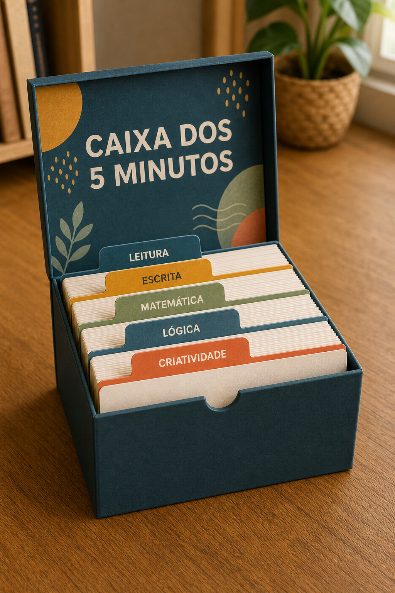
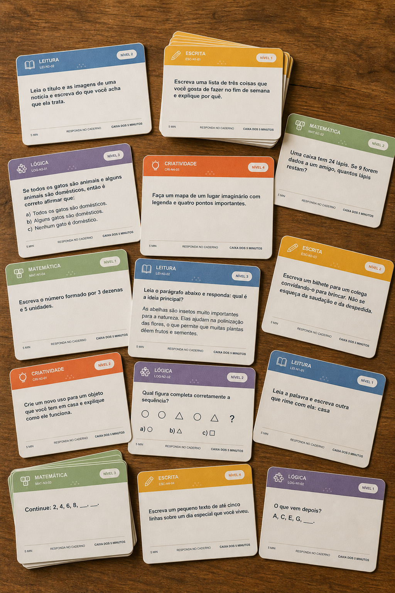

“Prof, já terminei”
Você ainda está ajudando quem precisa de mais tempo quando os primeiros começam a levantar e conversar.
IMPRIMA, MONTE E DEIXE NA SALA
Tenha 120 desafios curtos, separados por categoria e nível, em uma caixa pronta para transformar o tempo de espera em atividade produtiva.
Quero a Caixa completa — R$ 27Pagamento único • acesso imediato • 7 dias de garantia
Você ainda está ajudando quem precisa de mais tempo quando os primeiros começam a levantar e conversar.
Uma atividade extra que exige nova explicação só aumenta a interrupção e o seu planejamento.
Sem uma resposta pronta, o intervalo entre terminar e esperar rapidamente vira dispersão.
UMA ROTINA SIMPLES E VISÍVEL
Comandos planejados para caber no tempo de espera sem iniciar um conteúdo novo.
Leitura, escrita, matemática, lógica e criatividade aparecem em divisórias próprias.
Quatro níveis ajudam você a escolher o desafio adequado ao ritmo de cada turma.
O QUE VOCÊ RECEBE
Atividades de cinco categorias, distribuídas em quatro níveis, com versão colorida e econômica.
Base e capa articulada prontas para imprimir em duas folhas A4, recortar, dobrar e colar.
Cada categoria fica visível e fácil de encontrar, sem misturar os cartões.

Três passos claros para o aluno revisar, escolher um cartão e começar.
Índice dos 120 cartões e respostas de referência para consulta rápida.
Acabamento para a caixa, instruções de montagem e aplicação em sala.
120 cartões • 5 categorias • 4 níveis • caixa • divisórias • painel • gabarito
VEJA O QUE VAI FICAR NA SUA MESA

O acesso chega após a confirmação do pagamento.
Escolha a versão, recorte a caixa e organize as divisórias.
Mostre o painel uma vez e deixe o material acessível.
Abra os arquivos, confira os cartões e veja o material completo. Se não fizer sentido para a sua rotina, solicite o reembolso dentro do prazo.
Você decide com o produto na sua frente, sem risco.
Não. Os comandos são curtos e o painel apresenta uma rotina simples. Você explica o funcionamento uma vez e a turma consulta o material.
Foi pensado para os anos iniciais, com quatro níveis para você selecionar os cartões adequados à realidade da turma.
Não. Você pode começar com uma categoria e ampliar aos poucos. Há uma versão colorida e outra econômica.
Sim. A base e a capa usam duas folhas A4 em orientação paisagem. Imprima em tamanho real, sem ajustar à página.
Não. O pagamento é único, o acesso aos arquivos é vitalício e não há mensalidade.
Após a confirmação, você recebe o acesso para baixar os PDFs, imprimir e montar.
Pagamento único • acesso imediato • garantia de 7 dias